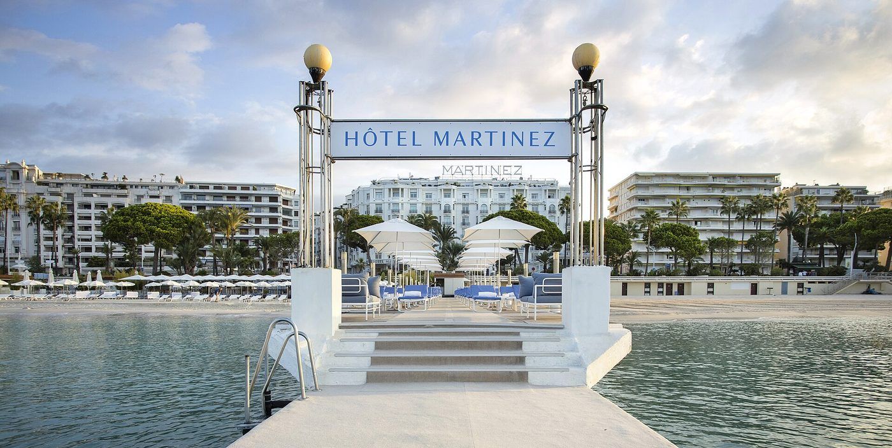
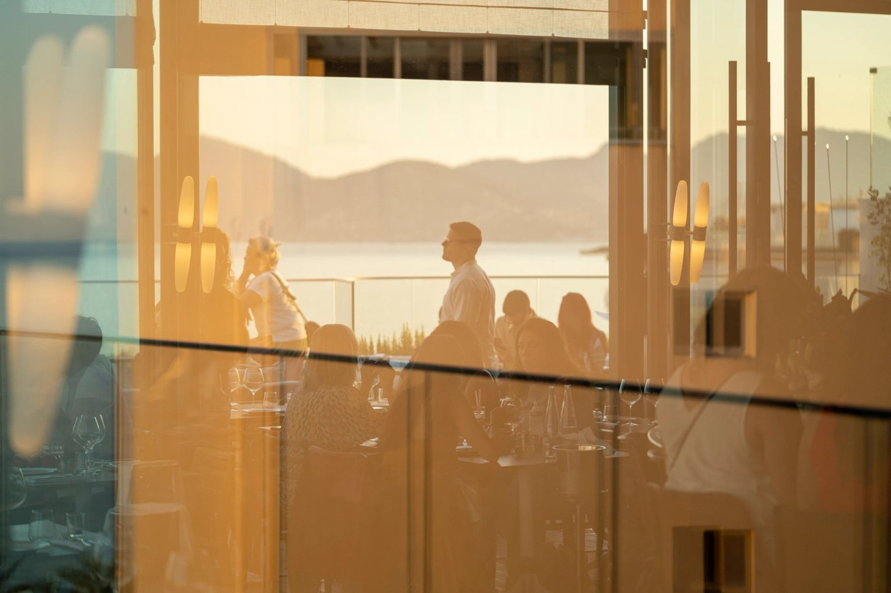
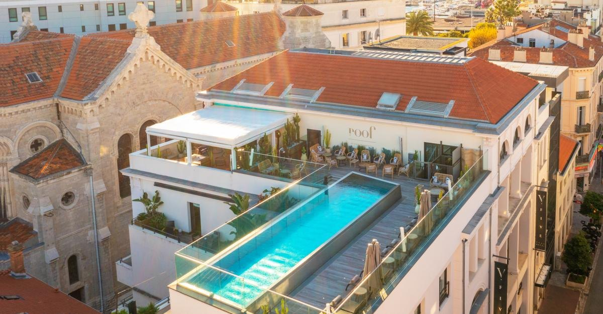

Hôtels de luxe à Cannes : les 8 meilleures adresses
Cannes vit sur trois noms depuis quatre-vingts ans. Deux d'entre eux ne sont plus
les meilleurs de la ville. Le Carlton, rouvert en 2023 après deux ans de travaux,
a pris une avance que ni le Martinez ni le Majestic n'ont comblée, et deux petites
maisons hors Croisette battent des palaces sur le terrain du bien-être.
Par Swann Bertaud, rédacteur hôtellerie de luxe✺Publié le 31 juillet 2026✺17 min de lecture
L'une des deux coupoles du Carlton, classées avec la façade, et la baie de
Cannes jusqu'à l'Estérel. Photo : Carlton Cannes, site officiel.
TL;DR : l'essentielLe podium cannois a changé de tête
Carlton Cannes, a Regent Hotel, score LMHS 8,7/10 :
rouvert en 2023 après deux ans de chantier, façade Belle Époque conservée, deux
ailes neuves, un jardin clos et la plus grande piscine à débordement de la Riviera.
Le seul des trois grands à ne pas traîner une décennie de retard.
Hôtel Martinez, 8,2/10 :
le seul hôtel de Cannes distingué Palace par Atout France, entré dans la
liste en 2026. La Palme d'Or de Jean Imbert y a repris une étoile, pas les deux
d'avant. 410 clés, c'est beaucoup.
Hôtel Barrière Le Majestic, 8,2/10 :
l'adresse la plus cannoise des trois, mitoyenne du Palais des Festivals,
Indice Croisette 5/5, le maximum de cette page. Mais 349 chambres et un spa
qui ne suit plus.
Le contre-pied : le Majestic porte l'Indice Croisette le
plus élevé de Cannes et ne monte pas sur la première marche, tandis que l'
Hôtel & Spa Belle Plage, sans plage privée, sans adresse
sur le boulevard et avec 45 chambres, arrive quatrième grâce au plus grand spa de la
ville. À Cannes, l'adresse et la qualité ne sont pas la même chose, et
c'est précisément ce que ce classement sert à démêler.
Deux notes, et ce qu'elles mesurent vraiment
Cette page croise deux notes qui ne disent pas la même chose. Le score LMHS sur 10 est celui de la grille Destination, déjà publiée dans nos palmarès de Lyon, de Paris et de Biarritz : rapport qualité-prix, critère thématique, localisation, service, avis clients vérifiés. Il note la qualité hôtelière globale.
Deux des huit adresses portent déjà un score publié sur ce site, et nous le reprenons à l'identique : le Martinez, 8,2/10 dans notre palmarès des 5 étoiles français hors Paris, et le Majestic, 8,2/10 dans nos hôtels de charme de la Côte d'Azur. Une même maison ne porte jamais deux notes différentes ici. Les six autres entrent aujourd'hui dans la grille pour la première fois, et chaque fiche dit ce qui fait leur note.
L'Indice Croisette LMHS, noté sur 5, est propre à cet article. Il ne mesure pas la qualité mais l'emplacement, sur cinq marqueurs vérifiables, et rien d'autre :
Adresse : sur le boulevard de la Croisette même, ou ailleurs.
Palais des Festivals : accessible à pied en quelques minutes.
Vue mer directe depuis les chambres, pas depuis le rooftop seulement.
Plage privée en propre, pas une plage partenaire.
Piscine extérieure ouverte aux résidents sans supplément.
Le classement de cette page suit le score LMHS, pas l'Indice Croisette. C'est ce qui fait descendre le Majestic à la troisième place malgré son 5/5 d'emplacement, et remonter Belle Plage à la quatrième avec un 3/5. Les deux notes figurent dans le tableau, à vous d'arbitrer.
Le tableau : score, emplacement, spa et plage
Rang
Hôtel
Adresse
Clés
Score LMHS
Indice Croisette
Spa
Plage privée
01
Carlton Cannes
58 bd de la Croisette
332 + 37 rés.
8,7/10
4,8/5
C Club
Oui
02
Hôtel Martinez
73 bd de la Croisette
410
8,2/10
4,6/5
L'Oasis, Carita
Oui
03
Majestic Barrière
10 bd de la Croisette
349
8,2/10
5/5
Diane Barrière
Oui
04
Belle Plage
2 rue Brougham
45 + 8 appts
7,9/10
3/5
Le plus grand
Non
05
Five Seas
1 rue Notre-Dame
45
7,8/10
2,6/5
Oui, 4 cabines
Non
06
JW Marriott Cannes
50 bd de la Croisette
261
7,4/10
4,4/5
Aucun
Partenaire
07
Canopy by Hilton
2 bd Jean Hibert
141
7,0/10
3,2/5
Payant, 16 ans et +
Non
08
Hôtel Lepoussin
1 rue Le Poussin
72
6,6/10
1,6/5
Aucun
Non
Classement par score LMHS. Capacités et équipements relevés sur les sites
officiels des établissements en juillet 2026. Les scores du Martinez et du Majestic sont
repris de nos palmarès déjà publiés. Sept adresses sont classées 5 étoiles, le Lepoussin
est un 4 étoiles, signalé comme tel.
Le chiffreUn seul palace à Cannes, et ce n'est pas celui qu'on croit
La distinction Palace n'est pas un label marketing : c'est une distinction d'État, attribuée par Atout France au-dessus des cinq étoiles. La collection 2026 compte 33 établissements, dont six nouveaux entrants. À Cannes, un seul hôtel y figure : le Martinez, distingué en 2026. Ni le Carlton ni le Majestic n'en font partie, contrairement à ce que laisse entendre une bonne partie de ce qui s'écrit sur la Croisette.
Le prix, à Cannes, ne veut rien dire sans une date
Nous ne publions pas de colonne de tarifs sur cette page, et c'est un choix. À Cannes, la même chambre passe du simple au décuple entre une nuit de février et une nuit de mai : pendant le Festival, l'hôtel n'appartient plus à ses clients mais au cinéma, et les grilles tarifaires n'ont plus grand-chose à voir avec l'hôtellerie. Annoncer un « à partir de » sans dire quel jour n'informe personne.
Les deux seuls tarifs que nous ayons relevés et publiés sont ceux de nos palmarès existants : le Martinez à partir de 163 € en creux de basse saison, un plancher qui détonne pour un palace de la Croisette et que nous signalons comme tel, et le Majestic de 420 € en basse saison à 1 400 € en haute. L'écart entre ces deux maisons voisines, sur le même boulevard, résume le sujet mieux qu'un prix moyen.
Le classement : les 8 meilleurs hôtels de luxe à Cannes
01
Carlton Cannes, a Regent Hotel 8,7/10
Pour qui : ceux qui veulent la plus belle machine hôtelière de Cannes, et qui acceptent d'y mettre le prix d'un hôtel neuf dans un bâtiment de 1913.
Deux ans de travaux, une réouverture en 2023, et un résultat qui remet les compteurs à zéro sur la Croisette. Tristan Auer a conservé la façade Belle Époque et ses deux coupoles classées, puis ajouté deux ailes neuves à l'arrière qui referment un jardin jusque-là inexistant : peristyles, terrasses, cabanas, et la plus grande piscine à débordement de la Riviera. L'hôtel compte 332 chambres et suites, plus 37 résidences privées installées dans les ailes neuves. Le C Club, environ 930 m² de sport et de soins, comprend jusqu'à un ring de boxe, un studio de yoga et de pilates. Trois restaurants, trois bars, un salon de thé et un fumoir. Aucune autre adresse cannoise ne propose cette densité d'équipement aujourd'hui, et c'est ce qui le place en tête.
Le bémol LMHS : le Carlton n'est pas distingué Palace par Atout France, contrairement au Martinez, et sa clientèle de résidences privées crée deux hôtels dans l'hôtel. Le chantier a été long et coûteux, la note s'en ressent dans les grilles tarifaires de haute saison. Enfin, un établissement de cette taille rouvert depuis deux ans reste en rodage sur certains services.
58 boulevard de la Croisette · 332 chambres et suites, 37 résidences · Réouverture 2023, Tristan Auer · C Club · Plage privée · Indice Croisette 4,8/5 ·
Site officiel →
02

Hôtel Martinez, Croisette est 8,2/10
Pour qui : ceux qui veulent l'adresse la plus décorée de Cannes, au sens propre, et une table gastronomique dans l'hôtel.
Le paquebot Art déco de 1929, à l'extrémité est de la Croisette. C'est le seul hôtel de Cannes distingué Palace par Atout France, entré dans la collection 2026 après une rénovation de fond. Ses 410 chambres et suites en font la plus grosse capacité de ce classement. La table, La Palme d'Or, est passée sous la direction de Jean Imbert et a décroché une étoile au Guide Michelin, dans un décor qui rend hommage au cinéma. Le spa L'Oasis ouvre sur un jardin planté avec une piscine et une salle de sport, et les soins sont signés Carita. Plage privée en face, avec ponton.
Le bémol LMHS : La Palme d'Or porte une étoile après en avoir longtemps porté deux sous Christian Sinicropi, et il faut le savoir avant de réserver une table sur la foi d'une réputation. 410 clés, c'est une ville : l'intimité n'est pas ce que l'on vient chercher ici. L'adresse est la plus urbaine du classement, sur un boulevard passant, et le tarif varie du simple au décuple selon la saison.
73 boulevard de la Croisette · 410 chambres et suites · Palace Atout France 2026 · La Palme d'Or, une étoile, Jean Imbert · Spa L'Oasis, Carita · Plage privée et ponton · Nuit dès 163 € en creux de saison · Indice Croisette 4,6/5 ·
Site officiel →
03
Hôtel Barrière Le Majestic 8,2/10
Pour qui : le Festival, les familles, et tous ceux pour qui la distance à pied jusqu'au Palais est le premier critère.
Façade blanche, 349 chambres et suites, et l'emplacement le plus cannois qui soit : le Majestic est mitoyen du Palais des Festivals. C'est la seule adresse de cette page à obtenir l'Indice Croisette maximal, 5/5 : sur le boulevard, à cent mètres du Palais, vue mer directe depuis les chambres supérieures, plage privée avec restaurant, piscine extérieure chauffée. Le spa Diane Barrière et le Fouquet's Cannes complètent une offre qui ne laisse aucun trou. En mai, l'hôtel est le quartier général des délégations officielles.
Le bémol LMHS : hors Festival, 349 chambres peuvent paraître surdimensionnées pour un séjour à deux, et le spa n'atteint pas le niveau des maisons mieux classées ici, ni celui de Belle Plage qui joue pourtant dans une autre catégorie de prix. La Croisette en juillet et en août est bondée. Et contrairement à ce qu'on lit souvent, le Majestic n'est pas distingué Palace par Atout France.
10 boulevard de la Croisette · 349 chambres et suites · Spa Diane Barrière · Fouquet's Cannes · Plage privée · Dès 420 €/nuit en basse saison, 1 400 € en haute · Indice Croisette 5/5 ·
Site officiel →
04

Hôtel & Spa Belle Plage, Suquet 7,9/10
Pour qui : un séjour bien-être à Cannes, sans payer la Croisette. C'est notre première recommandation pour cette occasion précise.
Voici la surprise de ce classement. Ce 5 étoiles de 45 chambres, une suite, huit appartements et un penthouse de 110 m², redessiné par Raphaël Navot en matières naturelles et couleurs pastel, dispose du plus grand espace bien-être de Cannes : 1 000 m² selon l'office de tourisme, avec un bassin watsu accessible une heure par jour à chaque client, ce qu'aucun palace de la Croisette ne propose. Le rooftop Bella sert une cuisine méditerranéenne face à l'Estérel, au pied du Suquet, et la plage est à cent mètres.
Le bémol LMHS : pas de plage privée en propre, contrairement aux trois grands, et une adresse en retrait du boulevard, d'où un Indice Croisette de 3/5 seulement. La superficie du spa est donnée par l'office de tourisme et n'est pas confirmée par l'hôtel sur son propre site, nous la publions sous cette réserve. Enfin, 45 chambres se remplissent vite en mai.
2 rue Brougham, square Mistral · 45 chambres, 1 suite, 8 appartements, 1 penthouse · Spa avec bassin watsu · Restaurant Bella en rooftop · Design Raphaël Navot · Indice Croisette 3/5 ·
Site officiel →
05

Five Seas, centre-ville 7,8/10
Pour qui : les voyageurs qui trouvent les palaces trop grands et qui préfèrent une adresse de créateur à une adresse de prestige.
Installé dans l'ancienne poste de Cannes, membre de Design Hotels, le Five Seas tient en 30 chambres et 15 suites. Sa signature est sur le toit : une piscine à débordement et le bar-restaurant Le Roof, où la cheffe Lori Moreau travaille une cuisine de produits locaux face au Suquet et au château. Le spa, environ 250 m², compte quatre cabines dont une double, deux saunas, un hammam et une salle de sport. C'est l'adresse la plus contemporaine de ce classement, et la plus tranquille à taille égale.
Le bémol LMHS : pas de vue mer depuis les chambres, pas de plage, pas d'adresse sur le boulevard, d'où l'Indice Croisette le plus bas des 5 étoiles de cette page, 2,6/5. Vous êtes à Cannes sans être sur la Croisette, ce qui est un choix assumé mais qu'il faut faire les yeux ouverts, surtout en mai où l'adresse compte autant que la chambre.
1 rue Notre-Dame · 30 chambres et 15 suites · Design Hotels · Piscine et restaurant Le Roof en rooftop · Spa de 250 m², 4 cabines · Indice Croisette 2,6/5 ·
Site officiel →
06
JW Marriott Cannes 7,4/10
Pour qui : les festivaliers et les voyageurs d'affaires qui achètent une adresse et un accès, pas un séjour.
Au 50 boulevard de la Croisette, à quelques centaines de mètres du Palais des Festivals, l'ancien Palais Stéphanie offre 261 chambres et suites, une piscine sur le toit avec vue mer, le restaurant italien Scalini et la Sunset Terrace. L'emplacement est excellent, l'accès à la plage partenaire Palais Stéphanie Beach est organisé, et l'ensemble est d'un standard international constant.
Le bémol LMHS : il n'y a pas de spa dans cet hôtel, et c'est difficilement défendable pour un 5 étoiles de la Croisette en 2026, quand un 4 étoiles hors centre en propose un. La plage n'est pas privée mais partenaire. Le service est décrit comme inégal par une partie des avis clients récents. Vous payez l'adresse et le toit, ce qui peut suffire pendant le Festival et beaucoup moins le reste de l'année.
50 boulevard de la Croisette · 261 chambres et suites · Piscine rooftop · Restaurant Scalini · Plage partenaire · Aucun spa · Indice Croisette 4,4/5 ·
Site officiel →
07
Canopy by Hilton Cannes, Vieux-Port 7,0/10
Pour qui : ceux qui préfèrent la vue sur le Vieux-Port et le Suquet à la vue sur le boulevard, et qui ne comptent pas sur le spa.
Face au Vieux-Port, à l'ouest du Palais, l'ancien Radisson Blu 1835 est devenu Canopy by Hilton. Il compte 129 chambres et suites plus 12 appartements, la plupart avec vue sur le port, la Croisette ou les îles de Lérins. Sa particularité : une piscine qui passe de l'intérieur à l'extérieur face à la Méditerranée, avec hammam et sauna, et un rooftop ensoleillé. Le quartier, entre le marché Forville et le Suquet, est le plus vivant de Cannes.
Le bémol LMHS : l'espace piscine et spa est payant pour les clients de l'hôtel, 20 € par personne pour 90 minutes, 40 € pour les visiteurs extérieurs, et il est interdit aux moins de 16 ans. Facturer la piscine à un résident d'un établissement de ce rang est un choix commercial que nous ne validons pas. L'hôtel n'est pas non plus « réservé aux adultes » comme on le lit parfois : ce sont les espaces bien-être qui le sont.
2 boulevard Jean Hibert · 129 chambres et suites, 12 appartements · Piscine intérieure-extérieure, hammam, sauna, accès payant · Rooftop · Indice Croisette 3,2/5 ·
Site officiel →
08
Hôtel Lepoussin, Forville 6,6/10
Pour qui : venir à Cannes sans payer Cannes, et dormir dans le quartier où les Cannois font leurs courses.
Nous assumons de faire figurer un 4 étoiles dans un palmarès de luxe, et de le signaler clairement. L'ancien Citadines de la rue Le Poussin, 72 chambres, a été entièrement repris et repositionné en boutique-hôtel haut de gamme. Il est à deux pas du marché Forville, du Suquet et du Vieux-Port, et à moins de dix minutes à pied du Palais des Festivals. C'est le meilleur point d'entrée de cette page pour qui veut la ville plutôt que la vitrine.
Le bémol LMHS : ni spa, ni piscine, ni vue mer, ni plage. L'Indice Croisette tombe à 1,6/5, le plus bas de la page. Et une étoile de moins que les sept autres, ce qui se voit sur les prestations autant que sur la facture. Le classer huitième n'est pas une critique : c'est sa place exacte dans une comparaison qu'il n'a jamais cherchée.
1 rue Le Poussin · 72 chambres · 4 étoiles · Ancien Citadines, repositionné en boutique-hôtel · Marché Forville et Suquet à pied · Indice Croisette 1,6/5 ·
Site officiel →
Le mot de SwannCannes vit sur trois noms, dont deux dorment
On m'a beaucoup dit que ce classement était impossible : à Cannes, on met le Martinez premier et on passe à autre chose. Sauf que les chiffres ne suivent plus. Le Carlton a dépensé deux ans et une fortune à se refaire entièrement, il a un jardin que personne d'autre n'a, une piscine que personne d'autre n'a, et un club de sport et de soins qui écrase la concurrence locale. Le Martinez a la distinction Palace, une vraie, et une étoile au Michelin, une seule. Le Majestic a la meilleure adresse de la ville et un spa qui date. Et pendant ce temps, un 5 étoiles de 45 chambres au pied du Suquet a construit le plus grand espace bien-être de Cannes, avec un bassin watsu que vous ne trouverez dans aucun palace du boulevard. Voilà ce que ce classement raconte : la Croisette n'est plus automatiquement le meilleur endroit où dormir à Cannes. Elle reste le meilleur endroit où être vu, ce qui n'est pas la même chose et ne se paie pas le même prix.
Swann Bertaud, rédacteur hôtellerie de luxe
Par profil : quelle adresse selon votre séjour
Pour le Festival de Cannes
Le Majestic Barrière d'abord, parce qu'il est mitoyen du Palais et que pendant dix jours cette distance vaut tout le reste. Le JW Marriott ensuite, sur le même trottoir, quelques centaines de mètres plus loin. Le Martinez pour l'atmosphère et les soirées, en sachant qu'il est à l'autre bout du boulevard. Réservez un an à l'avance : ces trois adresses sont bloquées par les délégations dès l'automne précédent.
Pour un séjour bien-être
Belle Plage est notre premier choix, et de loin : le plus grand espace bien-être de la ville, un bassin watsu accessible tous les jours, et une addition sans rapport avec celle du boulevard. Le Carlton pour qui veut le C Club et sa piscine à débordement dans un cadre de palace. Le Martinez pour le spa L'Oasis et son jardin. À éviter dans ce cas précis : le JW Marriott, sans spa, et le Canopy, dont l'accès à la piscine est facturé aux résidents.
Pour un week-end à deux
Five Seas et ses 45 clés, ou Belle Plage et son rooftop face à l'Estérel. Les trois grands de la Croisette comptent entre 332 et 410 chambres : ce sont d'excellents hôtels, mais on n'y est jamais seuls au monde. Le même arbitrage que dans notre sélection romantique parisienne, où les vingt chambres battent les trois cents à chaque fois.
Pour découvrir Cannes en dehors de la carte postale
Lepoussin ou Canopy, tous deux du côté du Vieux-Port et du marché Forville, là où la ville continue d'exister hors saison. C'est aussi de ce côté que se trouvent les meilleures tables qui ne sont pas dans un hôtel.
FAQ : hôtels de luxe à Cannes
Quel est le meilleur hôtel de luxe à Cannes en 2026 ?
Le Carlton Cannes, a Regent Hotel, avec un score LMHS de 8,7/10. Rouvert en 2023 après deux ans de travaux, il conserve sa façade Belle Époque et ses coupoles classées, et ajoute deux ailes neuves, un jardin clos, la plus grande piscine à débordement de la Riviera et le C Club, environ 930 m² de sport et de soins. Le Martinez et le Majestic suivent à 8,2/10, scores repris à l'identique de nos palmarès déjà publiés.
Quel hôtel de Cannes est distingué Palace ?
Un seul : l'Hôtel Martinez, entré dans la collection Palace d'Atout France en 2026. Cette distinction d'État, située au-dessus des cinq étoiles, compte 33 établissements en France. Ni le Carlton ni le Majestic n'en font partie, malgré ce qu'on lit fréquemment.
Quel palace de Cannes a le meilleur spa ?
Aucun, si l'on parle de taille. Le plus grand espace bien-être de Cannes n'est pas sur la Croisette : c'est celui de l'Hôtel & Spa Belle Plage, 1 000 m² selon l'office de tourisme, avec un bassin watsu accessible une heure par jour à chaque client. Sur le boulevard, le C Club du Carlton est le mieux équipé, devant le spa L'Oasis du Martinez, signé Carita, et le spa Diane Barrière du Majestic. Le JW Marriott n'a pas de spa du tout.
Quelle est la différence entre le Carlton et le Martinez ?
Le Carlton (8,7/10) est l'hôtel le plus complet et le plus récemment refait : jardin clos, plus grande piscine à débordement de la Riviera, C Club, trois restaurants. Le Martinez (8,2/10) a ce que le Carlton n'a pas : la distinction Palace d'Atout France et une table étoilée dans l'hôtel, La Palme d'Or de Jean Imbert, une étoile au Michelin après en avoir longtemps porté deux. Le Carlton pour l'équipement, le Martinez pour le statut et la table.
Quel hôtel choisir pour le Festival de Cannes ?
Le Majestic Barrière, mitoyen du Palais des Festivals, seule adresse de notre sélection à obtenir l'Indice Croisette maximal de 5/5. Le JW Marriott est l'autre option de proximité immédiate sur le boulevard. Réservez très tôt : ces adresses sont bloquées par les délégations officielles dès l'automne précédent, et les tarifs de mai n'ont aucun rapport avec le reste de l'année.
Qu'est-ce que l'Indice Croisette LMHS ?
C'est une note sur 5 propre à cet article, qui mesure l'emplacement et non la qualité, sur cinq marqueurs vérifiables : l'adresse sur le boulevard de la Croisette, la proximité à pied du Palais des Festivals, la vue mer directe depuis les chambres, la présence d'une plage privée en propre, et une piscine extérieure accessible sans supplément. Il ne suit pas le score hôtelier : le Majestic obtient 5/5 et arrive troisième, Belle Plage obtient 3/5 et arrive quatrième.
Méthode et sources
8 adresses retenues parmi les hôtels de luxe cannois, classées par le score LMHS de la grille Destination : rapport qualité-prix (25 %), critère thématique (25 %), localisation (20 %), service (20 %), avis clients vérifiés (10 %). Les scores du Martinez et du Majestic sont repris à l'identique de notre palmarès des 5 étoiles hors Paris et de nos hôtels de charme de la Côte d'Azur, afin qu'une même maison ne porte jamais deux notes différentes sur ce site ; les six autres entrent dans la grille avec cette publication. L'Indice Croisette LMHS, noté sur 5, mesure cinq marqueurs d'emplacement : adresse sur le boulevard, proximité du Palais des Festivals, vue mer directe depuis les chambres, plage privée en propre, piscine extérieure sans supplément. Aucun séjour de contrôle n'a été effectué pour ce palmarès : capacités, équipements, chefs et distinctions ont été relevés sur les sites officiels des huit établissements en juillet 2026, la distinction Palace sur la collection Atout France 2026, l'étoile de La Palme d'Or sur le Guide Michelin, la superficie du spa de Belle Plage sur l'office de tourisme de Cannes, qui est la seule source à la publier. Nous ne publions pas de colonne de tarifs : à Cannes, un prix sans date n'informe personne. Aucun partenariat commercial, aucune affiliation. Photographies : sites officiels du Carlton Cannes, de l'Hôtel Belle Plage et du Five Seas ; Hôtel Martinez, photographie déjà publiée sur ce site.
8 adressesIndice Croisette propriétaire1 seul Palace à Cannes0 partenariat